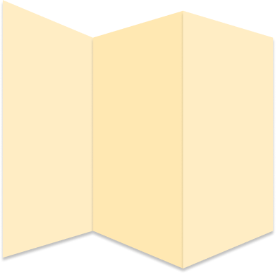

בכל שלב בלומדה זו, יופיע לנו איקס על המפה עם נושא שעלינו לקרוא עליו. בסיום הקריאה יפתח לנו הנושא הבא. רק לאחר שסיימנו לקרוא בקפידה את כל הנושאים, נוכל לסיים את הלומדה. בסיום הלומדה יש להתחייב שקראנו והבנו את תוכן הלומדה. בהצלחה!